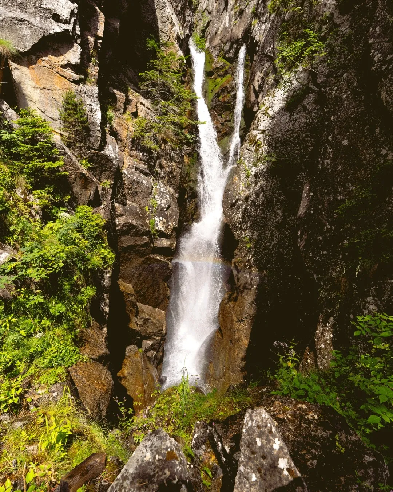

Photo · @hebergements_les_rochersNARROWER, OLDER, LESS KNOWN
Durnand's smaller cousin near Salvan. Same walkway trick, half the tourists, and arguably more atmospheric.
Park near the village of Salvan and walk in. The trail is signposted. The wooden bridges are older and more weathered than Durnand's, which photographs beautifully. Waterfalls stack one above the next for almost a kilometre.
Best shot mid-morning when the light filters down through the canopy. In heavy rain seasons the spray gets intense, so protect the camera. The return route loops back through larch forest that turns gold in October.